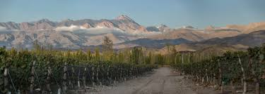

Discover which Zuccardi mountain wine fits your taste.
1. Do you prefer your reds bold and oaky, or fresh and mineral?
2. What is your ideal dinner pairing?
3. Does the idea of "mountain-grown" limestone wine intrigue you?
4. How much do you value a wine's "age-worthiness"?
5. Are you looking for a Hall of Fame vineyard experience?
Based on your score, you appreciate the "purity of fruit" found in the Uco Valley. We recommend the 100-point Zuccardi Malbec series available via Majestic.
Pure Terroir. Use our Palate Quiz to find your specific Uco Valley parcel match.
The Concrete RevolutionWhy Sebastián Zuccardi ditched the oak for Andean stone and concrete. Read the story →